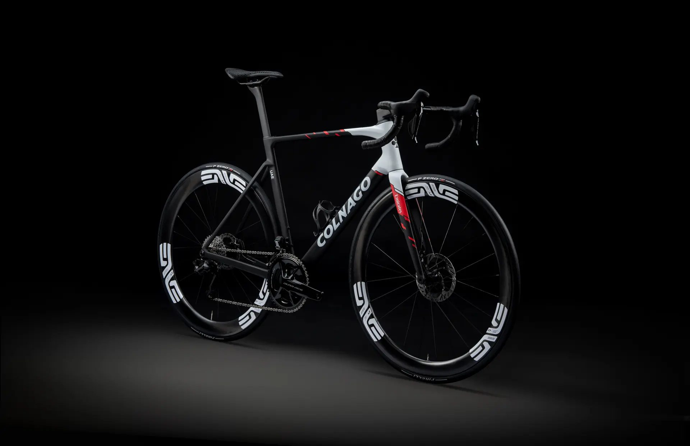
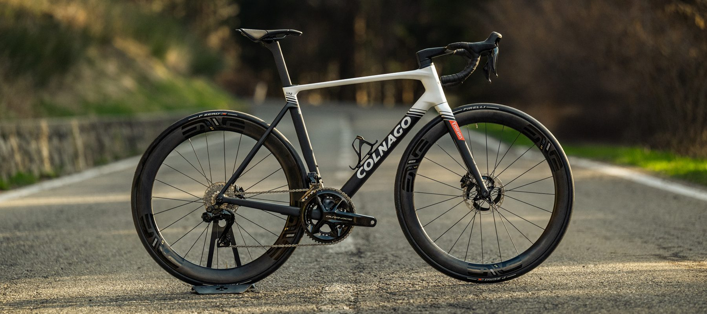
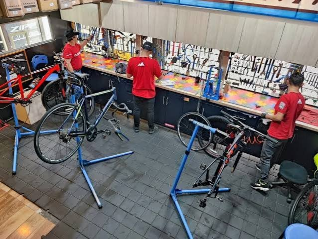
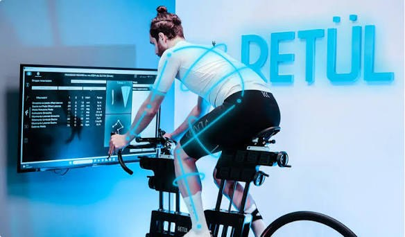
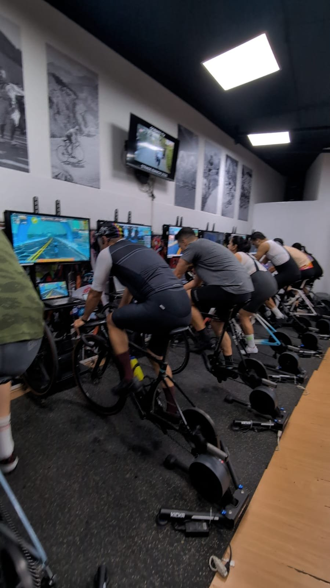
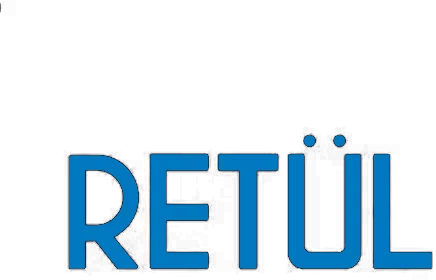
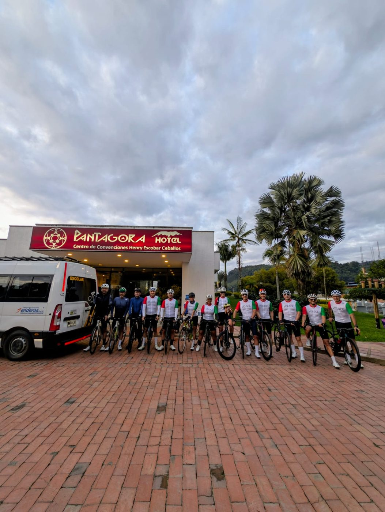
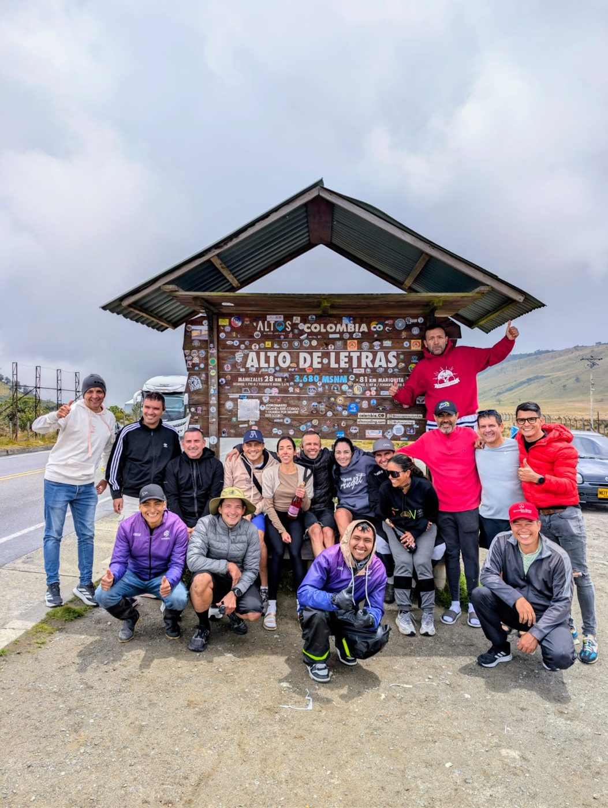
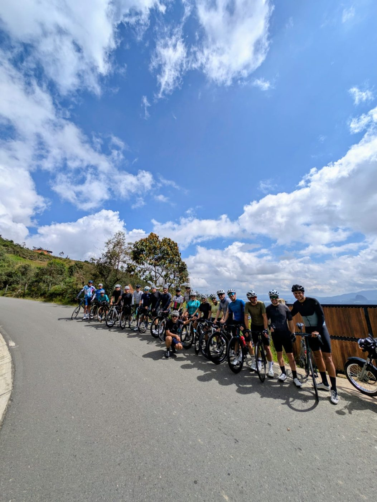
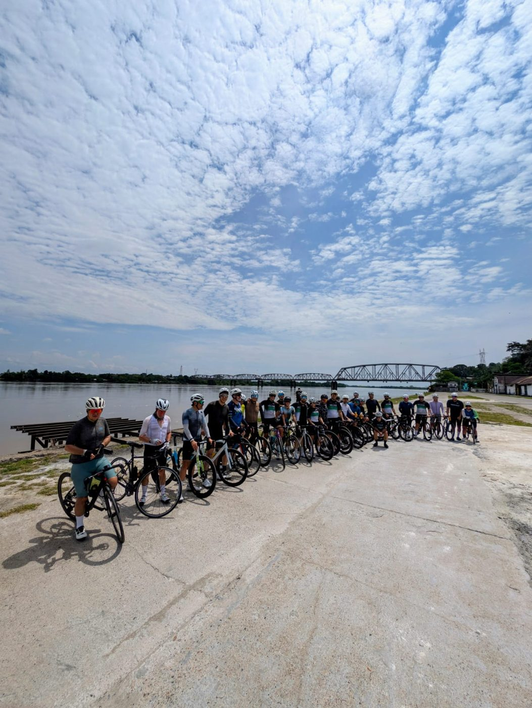

Tienda de bicicletas en MedellínEl ciclismo
a la italiana.
Bicicletas de alta gama, taller especializado, bike fit Retül y centro de entrenamiento. Todo en un solo lugar, en El Poblado.
Desde elegir tu próxima bici hasta dejarla perfecta para ti. Un equipo de ciclistas atendiendo ciclistas.

Ruta, gravel, MTB y triatlón de las mejores marcas del mundo. Te asesoramos según cómo y dónde montas.

Mantenimiento, alistada y lavada para bicicletas de ruta, MTB y eléctricas, con mecánicos que conocen las bicis de alto nivel.

Medición 3D de tu posición en movimiento. Más potencia, más comodidad y menos lesiones, con datos y no a ojo.

Clases grupales en simulador por potencia, llueva o truene. Entrenamiento guiado para mejorar de verdad.

Retül es el sistema de bike fit con captura de movimiento 3D que usan los mejores fitters del mundo. Mide cada grado de movimiento y cada milímetro mientras pedaleas, con datos que el ojo no puede ver, para ajustar tu bici a tu cuerpo y no al revés.
Una posición correcta te deja rodar más horas sin molestias en espalda, cuello, manos o sillín.
Alinear tu cuerpo en la bici ayuda a prevenir dolor de rodilla, espalda baja y adormecimiento en manos y pies.
Una posición óptima aprovecha mejor tu fuerza: más vatios, más resistencia y más velocidad con el mismo esfuerzo.
¿Vas a comprar bici y no sabes qué talla o modelo? Hacer el bike fit primero es la mejor forma de acertar.
Busca por categoría, tipo o marca. ¿No ves lo que buscas? Escríbenos: tenemos más en tienda y lo conseguimos.
No encontramos productos con esa búsqueda, pero seguro lo tenemos o lo conseguimos.
Pregúntanos por WhatsAppTrabajamos con las marcas que montamos y en las que confiamos.
Leyenda del ciclismo italiano. Cuadros de ruta y competencia con décadas de historia en el pelotón profesional.
Ver bicicletas ColnagoDesde Treviso, bicicletas de ruta que han ganado las carreras más grandes del mundo. Diseño, rigidez y velocidad.
Cotizar PinarelloTodo para montar en bicicleta en Medellín, en una sola tienda en El Poblado.
Bicicletas ruteras de carbono Colnago, Pinarello y Orbea Orca, con bike fit Retül gratis en bicis de más de $8.000.000.
E-MTB Orbea Wild de enduro, con asistencia eléctrica para subir más y bajar mejor. Agenda tu test ride.
Cascos de ciclismo Kask para ruta y aero: Protone Icon, Elemento, Mojito³, Sintesi y Utopia Y.
Gafas KOO, incluidas las fotocromáticas Alibi, que se aclaran y oscurecen solas con la luz.
Zapatillas Sidi Shot 3, Wire 3 y Prima para ruta, y Aeron, Dominator X y MTB Speed para montaña. Ajustamos tus calas con el bike fit.
Pedales de potencia y ciclocomputadores Magene para entrenar por vatios.
Mantenimiento de bicicletas de ruta, MTB y eléctricas, suspensiones y grupos electrónicos Di2, AXS y Campagnolo.
Bike fit Retül en Medellín para encontrar tu posición, tu talla y montar sin dolor.




Rodadas, viajes y eventos para salir a montar en grupo por las mejores rutas de Colombia.
Próximas rodadas en InstagramLocal 101 · El Poblado, Medellín. Ven por tu bike fit, una sesión en simulador o simplemente a hablar de bicis.